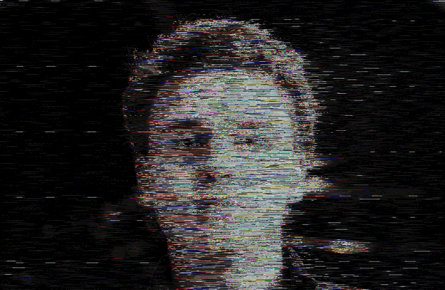
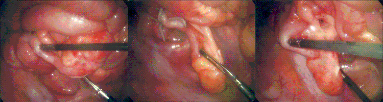
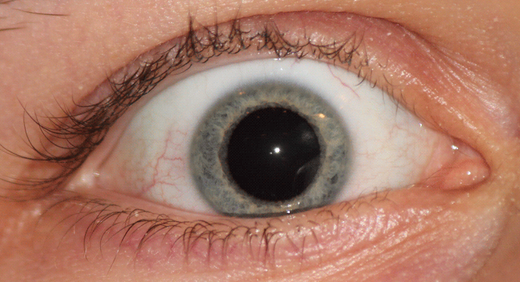
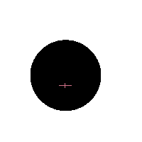

-
Ｆｕｌｌ ｎａｍｅ ｏｆ ｓｕｂｊｅｃｔ： ＡＮＧＵＳ ＥＤＡＮＤＲＡＫＥ ＮＩＣＮＥＶＥＮ
（ （ ＂Ｗｒｉｔｅｒ ／ Ａｕｔｈｏｒ ／ Ｃｒｅａｔｏｒ＂ ） ）
- ┏┓

┗┛
Ｕｐｌｏａｄｉｎｇ ｒｅｌｅｖａｎｔ ｄａｔａ ｎｏｗ．．．
Ｅｘｐｅｃｔ ｆｒａｇｍｅｎｔｅｄ ｄａｔａ （ ＣｏＳ ｉｓ ｔｈｅ ｃａｕｓｅ）． - ┏┓
-
Ａｎｇｕｓ Ｎｉｃｎｅｖｅｎ ｗａｓ ｂｏｒｎ ｉｎ １９９５．
Ｓｕｂｊｅｃｔ ｃｌａｉｍｓ ｔｏ ｂｅ ａ ”ｗｒｉｔｅｒ”， ｂｕｔ ｔｈｏｒｏｕｇｈ
ａｎａｌｙｓｉｓ ｓｈｏｗｓ ｎｏ ｄｉｓｔｉｎｃｔ ｄｉｆｆｅｒｅｎｃｅｓ ｆｒｏｍ
ｈｕｍａｎ ｂｉｏｌｏｇｙ． （Ｓｅｅ Ａ２１ ｆｏｒ ｍｏｒｅ ｉｎｆｏｒｍａｔｉｏｎ．）
Ｓｐｅｎｄｓ ｍｏｓｔ ｏｆ ｉｔｓ ｔｉｍｅ ｐｕｓｈｉｎｇ ｋｅｙｓ ｏｎ ａ
ｐｒｉｍｉｔｉｖｅ Ｏ４ ｍａｔｒｉｘ． Ｅｎｊｏｙｓ ｓｌｅｅｐｉｎｇ ｐａｓｔ ｉｔｓ
ｂｉｏｌｏｇｉｃａｌ ｎｅｅｄｓ． Ｉｔ ａｐｐｅａｒｓ ｔｈｅ ｓｕｂｊｅｃｔ ｓｅｅｋｓ ｓｏｍｅｔｈｉｎｇ ｏｕｔ ｉｎ ｉｔｓ ｄｒｅａｍｓ． Ｆｕｒｔｈｅｒ ａｎａｌｙｓｉｓ
ｒｅｑｕｉｒｅｄ．
-
- Ｓｕｂｊｅｃｔ＇ｓ ＩＮＴＥＲＥＳＴＳ
（ｓｔｏｒｅｄ ａｗａｙ ｆｏｒ ｆｕｒｔｈｅｒ ｉｎｑｕｉｒｙ）
（Ｅｘｃｅｓｓｉｖｅ ＤＡＴＡ）
Ｏｎｌｙ ｐｒｏｃｅｅｄ ｉｆ ｙｏｕｒ ｐｒｏｂｅ ｉｓ ｍｏｄｉｆｉｅｄ ｆｏｒ
ｅｘｃｅｓｓｉｖｅ ｄａｔａ ｆｌｏｗ．
Ｆａｉｌｕｒｅ ｔｏ ｈｅｅｄ ｔｈｉｓ ｗａｒｎｉｎｇ ｍａｙ ｌｅａｄ ｔｏ
ｐｒｏｂｅ ｄｅａｔｈ． - Ｓｕｂｊｅｃｔ＇ｓ ＩＮＴＥＲＥＳＴＳ
-
＂Ａ２１＂
（Ｐｒｏｂｅ ｉｎｔｏ ｓｕｂｊｅｃｔ＇ｓ ｏｒｇａｎｓ．）

Ｎｏｔｉｃｅ ｔｈｅ ｌａｃｋ ｏｆ ｄｅｆｅｎｓｅｓ ａｎｄ ｉｎｅｆｆｉｃｉｅｎｔ
ｃｉｒｃｕｌａｔｏｒｙ ｓｙｓｔｅｍｓ． Ｗｅａｋ ｃｅｌｌｕｌａｒ ｓｔｒｕｃｔｕｒｅｓ，
ｃｏｍｍｏｎ ｉｎ Ｅａｒｔｈ ｂｉｏｌｏｇｙ， ｗｅｒｅ ａｌｓｏ ｏｂｓｅｒｖｅｄ．
Ｓｕｂｊｅｃｔ＇ｓ ｗｒｉｔｅｒ ｓｔａｔｕｓ ｉｓ ｎｏｔ ａ ｓｙｍｐｔｏｍ ｎｏｒ ａ
ｃａｕｓｅ ｆｏｒ ｌｉｎｋｓ ｔｏ ｃｌａｓｓ ［００］ ｔｈｒｅａｔｓ．
Ｓｕｂｃｏｎｓｃｉｏｕｓ ｖａｒｉａｂｌｅｓ ａｒｅ ｓｕｓｐｅｃｔ．
Ｓｅｅ ｔａｂｌｅｓ ２２４５－２２５０ ｆｏｒ ｍｏｒｅ ｉｎｆｏｒｍａｔｉｏｎ．
-
－－－－ Ｐａｓｓ ２３ ｓａｍｐｌｉｎｇ．－－－－
（ ＂Ｔｈｏｕｇｈｔｓ ／ Ｔｈｉｎｇｓ ｓａｉｄ＂ ）
- "Ｄｏｎ＇ｔ ｂｅ ｓｉｌｌｙ， ｐｈａｎｔａｓｍｓ ｍａｋｅ ｔｈｅ ｂｅｓｔ ｏｆ
ｃｏｍｐａｎｙ． Ｗｈｙ， ｙｏｕ＇ｒｅ ｈａｌｆ ａ ｃｏｍｐａｎｙ ｙｏｕｒｓｅｌｆ．"
"Ｉｔ ｉｓｎ’ｔ ｉｍｍｏｒａｌ， ｉｔ’ｓ ｄａｒｋ ｍａｇｉｃ！"
"Ｗｈａｔ ｗａｓ Ｉ ｊｕｓｔ ｄｏｉｎｇ？"
"Ｅａｓｙ ａｓ ｒｏｂｂｉｎｇ ａ ｇｒａｖｅ．"
"Ｗｈａｔ ａ ｗａｓｔｅ．"
"Ｙｅａｈ， ｅｖｅｎ ｄｙｉｎｇ ｉｓｎ＇ｔ ｅａｓｙ ｔｈｅｓｅ ｄａｙｓ．"
（ｄｕｒｉｎｇ ＲＥＭ）
"Ｗｅ＇ｒｅ ｇｏｉｎｇ ｔｏ ｎｅｅｄ ａ ｌｏｔ ｏｆ ｂｌｏｏｄ．"
"Ｅｎｏｕｇｈ ｏｆ ｔｈｉｓ．"
"Ｔｈｉｓ ｉｓｎ＇ｔ ｒｉｇｈｔ．"
"Ｗｅｒｅ ｔｈｅｙ ｅｖｅｎ ｔｈｉｎｋｉｎｇ？"
- －－－－ Ｆｕｒｔｈｅｒ ｄａｔａ ｉｓ ｓｔｏｒｅｄ ｉｎ Ａｒｍ ９０２．－－－－
- "Ｄｏｎ＇ｔ ｂｅ ｓｉｌｌｙ， ｐｈａｎｔａｓｍｓ ｍａｋｅ ｔｈｅ ｂｅｓｔ ｏｆ
-
Ｌｏｏｋｓ ａｔ ｅｖｅｒｙｔｈｉｎｇ．
（Ｂｕｔ ｓｅｅｓ ｎｏｔｈｉｎｇ．）

Ｏｐｔｉｃａｌ ｏｒｇａｎｓ ｓｈｏｗ ｎｏ ｒｅｓｐｏｎｓｅ ｔｏ Ｆｏｌｄ ｄａｔａ． Ｖｅｉｎ
ｐａｔｔｅｒｎｓ ａｒｅ ｎｅａｒｌｙ ｉｄｅｎｔｉｃａｌ ｔｏ ｐａｒａｓｉｔｅ Ｌ－９９２１
ｆｏｕｎｄ ｏｎｌｙ ｔｗｏ ｃｌｕｓｔｅｒｓ ａｗａｙ． ［Ｐｒｏｍｉｓｉｎｇ．］
Ｃｅｌｌｓ ａｒｅ ｓａｍｐｌｅｄ ｄｕｒｉｎｇ ｓｕｂｊｅｃｔ＇ｓ ｓｌｅｅｐ ｔｏ ｂｅ ｒｕｎ ｔｈｒｏｕｇｈ ｔｅｓｔｓ． Ｇｒｏｗｎ ｏｒｇａｎｓ ｒｅｖｅａｌ ｈｕｍａｎ ｓｉｇｈｔ ｔｏ ｏｎｌｙ ｔａｋｅ ｉｎ ．００１２％ ｏｆ ａｌｌ ｐｏｓｓｉｂｌｅ ｄａｔａ． ［Ａｃｃｅｐｔａｂｌｅ ｆｏｒ ｓｕｒｖｉｖａｌ， ｙｅｔ ｄｅｓｔｒｏｙｓ ｔｈｅｏｒｉｅｓ ３３， ８７９， ａｎｄ ９，０２３． Ａｒｃｈｉｖｅｓ ｈａｖｅ ｂｅｅｎ ｕｐｄａｔｅｄ ｓｉｎｃｅ ｔｈｉｓ
ｄｉｓｃｏｖｅｒｙ．］- ＂Ｆｅａｒ ｄｉｓｐｌａｙ．＂
（Ｓｏｕｒｃｅ ｏｆ ｆｅａｒ ｉｓ．．．． ｕｎｋｎｏｗｎ．）

Ｒｅｓｔｒｉｃｔｉｎｇ ｉｔｓ ｍｏｖｅｍｅｎｔ ｃａｕｓｅｄ ｉｔｓ ｅｙｅｓ
ｔｏ ｓｅａｒｃｈ ｆｏｒ ｓｏｍｅｔｈｉｎｇ ［ｕｎｋｎｏｗｎ］．
（Ｈｅｌｐ？？？）
Ａｌｓｏ， ａｎ ｉｎｃｒｅａｓｅｄ ｈｅａｒｔ ｒａｔｅ ｗａｓ ｏｂｓｅｒｖｅｄ．
Ａ ｐｒｏｂｅ ｗｉｌｌ ｂｅ ｉｎｓｅｒｔｅｄ ｉｎｔｏ ｉｔ ａｔ ａ ｌａｔｅｒ ｄａｔｅ
（ｓｅｅ Ｇｖ＃５５６， ［ｓｅｃｔｏｒ ８９＇ｓ Ｈ ｃｌｅａｒａｎｃｅ ｒｅｑｕｉｒｅｄ］
ｆｏｒ ｆｕｒｔｈｅｒ ｄｅｔａｉｌｓ）．
-
- Ｈａｓ ｂｅｅｎ ｉｎｃｕｂａｔｅｄ ｏｎ Ｗ８９９ ｉｎ ｔｈｅ Ｖｅｌ ｃｌｕｓｔｅｒ． Ｈａｓ ｎｏ ｖｉａｂｌｅ ｍｅｔｈｏｄ ｏｆ ｌｅａｖｉｎｇ ｉｔｓ ｓｕｎ
（ｔｅｔｈｅｒｅｄ ｂｙ ｔｈｅ ｗｅａｋ ｆｏｒｃｅ ｏｆ ｇｒａｖｉｔｙ （ｑｕｉｔｅ
ｓｈａｍｅｆｕｌ））． Ｈａｂｉｔｓ ａｎ ａｒｅａ ｋｎｏｗｎ ａｓ
”Ｗｉｓｃｏｎｓｉｎ”． ［Ｎｏｔｅ： ｃｏｍｍｏｎ ｓｔａｇｅ ６ｅ ｂｉｏｓｐｈｅｒｅ］
Ｐｒｅｆｅｒｓ ｓｏｌｉｔｕｄｅ． Ｗｉｔｈｉｎ ａ ｍａｒｇｉｎ ｏｆ ｅｒｒｏｒ
ｒｏｕｇｈｌｙ ０．０２％， ｐｒｅｄｉｃｔｉｏｎｓ ｏｆ ｈｏｗ ｓｕｂｊｅｃｔ ｗｉｌｌ ｃａｒｒｙ ｏｕｔ ｈｉｓ ｄａｙ ａｒｅ ｃｏｍｐｌｅｔｅｌｙ ａｃｃｕｒａｔｅ．
Ａｂｅｒｒａｔｉｏｎｓ ａｒｅ ａｃｃｏｕｎｔｅｄ ｆｏｒ ｂｙ ｉｍｐｕｌｓｉｖｅ ａｎｄ ｒｅｃｋｌｅｓｓ ｂｅｈａｖｉｏｒ．［Ｎｏｔｅ： Ａ ｃｏｍｍｏｎ ａｆｆｌｉｃｔｉｏｎ ｆｏｒ ｃｌａｓｓ １ ｌｉｆｅｆｏｒｍｓ．］
Ｉｎｅｘｔｒｉｃａｂｌｙ ｃｏｎｎｅｃｔｅｄ ｔｏ ｔｈｅ ｆｒａｇｍｅｎｔｓ．
Ｃｕｒｒｅｎｔ ｉｎｖｅｓｔｉｇａｔｉｏｎ ｈａｓ ｕｎｃｏｖｅｒｅｄ ９１ ｐｏｓｓｉｂｌｅ ｌｅａｄｓ， ５２１ ｆａｌｓｅ ｆｌａｇｓ， ａｎｄ ４ ｌｉｋｅｌｙ
ｃｏｎｎｅｃｔｉｏｎｓ． Ｐｒｏｂａｂｉｌｉｔｙ ｓｕｂｊｅｃｔ ｈｏｌｄｓ ｒｅｌｅｖａｎｔ ＫＥＹ ｄａｔａ： ３１．６％ - Ｈａｓ ｂｅｅｎ ｉｎｃｕｂａｔｅｄ ｏｎ Ｗ８９９ ｉｎ ｔｈｅ Ｖｅｌ ｃｌｕｓｔｅｒ． Ｈａｓ ｎｏ ｖｉａｂｌｅ ｍｅｔｈｏｄ ｏｆ ｌｅａｖｉｎｇ ｉｔｓ ｓｕｎ
-
Ｍａｎｉｐｕｌａｔｏｒ ａｐｐｅｎｄａｇｅｓ．
（Ｔｈｏｕｇｈ ｔｏｕｃｈｅｓ ｕｐｏｎ ｎｏｔｈｉｎｇ ｔｈａｔ ｍａｔｔｅｒｓ．）
Ｎｏｒｍａｌ ａｐｐｅｎｄａｇｅ ｓｔｒｕｃｔｕｒｅ． Ｓｕｂｊｅｃｔ ｍｏｖｅｓ ｆｉｎｇｅｒｓ ａｂｏｕｔ ｆｏｒ ｎｏ ａｐｐａｒｅｎｔ ｒｅａｓｏｎ．
［Ｐｏｓｓｉｂｌｅ ｓｔｒｅｓｓ ｍａｎａｇｅｍｅｎｔ．］
- Ｉｓ ｉｔ ａｔｔｅｍｐｔｉｎｇ ｔｏ ｍａｎｉｐｕｌａｔｅ ｔｈｅ ＴＨＲＥＡＤＳ？
（Ｔｒｏｕｂｌｉｎｇ．）
Ａ ＶＶＩ ｆｉｌｔｅｒ ｍａｌｆｕｎｃｔｉｏｎｅｄ ｏｎ ｓｉｔｅ．
Ｄａｔａ ｓａｌｖａｇｅａｂｌｅ， ｔｈｏｕｇｈ ｉｎｃｏｍｐｌｅｔｅ．
-
Ｓｃａｎ ｐａｓｓ ９２００３１ ｈａｓ ｓｈｏｗｎ ａｎｏｍａｌｉｅｓ ｉｎ
ｓｅｖｅｒａｌ ｓｅｃｔｏｒｓ．
Ｆｉｅｌｄｅｄ ｄｅｐｔｈ ｏｆ ０．０００００１１１３ ｍｉｃｒｏｎｓ
ｔｈｒｏｕｇｈｏｕｔ ｓｔｒｕｃｔｕｒｅ ｓｈｏｗｓ ｅｖｉｄｅｎｃｅ ｏｆ
ａｂｎｏｒｍａｌ ｃｏｎｎｅｃｔｉｏｎｓ．
Ｃｅｌｌｕｌａｒ ｒｅｓｐｏｎｓｅ ｔｏ ｕｐｌｉｎｋ ａｔｔｅｍｐｔｓ ｉｓ ｔｈｅ
ｓａｍｅ ｔｈｒｏｕｇｈｏｕｔ ｂｏｄｙ： ｃｅｌｌｕｌａｒ ｄｅａｔｈ．
Ｔｈｉｓ ｓｉｇｎａｌ ｒｅｐｅａｔｓ ｗｉｔｈｉｎ ｃｅｒｅｂｒｕｍ： ０１０１０１００ ０１１０１０００ ０１１０１００１ ０１１１００１１ ００１０００００ ０１１１００１１ ０１１１００００ ０１１００００１ ０１１０００１１ ０１１００１０１ ００１０００００ ０１１０１００１ ０１１１００１１ ００１０００００ ０１１００１１０ ０１１０１１１１ ０１１１００１０ ０１１００１１０ ０１１００１０１ ０１１０１００１ ０１１１０１００ ００１０１１１０ ００１０００００ ０１００１１１１ ０１１１０１０１ ０１１１００１０ ０１１１００１１ ００１０００００ ０１１０１００１ ０１１１００１１ ００１０００００ ０１１００００１ ０１１０１１００ ０１１０１１００ ００１０００００ ０１１１０１００ ０１１０１０００ ０１１００００１ ０１１１０１００ ００１０００００ ０１１１０１１１ ０１１０１００１ ０１１０１１００ ０１１０１１００ ００１０００００ ０１１０００１０ ０１１００１０１ ００１０００００ ０１１００００１ ０１１０１１１０ ０１１００１００ ００１０００００ ０１１００００１ ０１１０１１００ ０１１０１１００ ００１０００００ ０１１１０１００ ０１１０１０００ ０１１００００１ ０１１１０１００ ００１０００００ ０１１００１０１ ０１１１０１１０ ０１１００１０１ ０１１１００１０ ００１０００００ ０１１１０１１１ ０１１００００１ ０１１１００１１ ００１０１１１０
Ｆｕｒｔｈｅｒ ｔｅｓｔｓ ｈａｖｅ ｒｅｖｅａｌｅｄ ｙｅｔ ａｎｏｔｈｅｒ
ｍｅｓｓａｇｅ ａｍｏｎｇｓｔ ｔｈｅ ｓｙｍａｔｉｃ ｓｔａｔｉｃ ｂｅｔｗｅｅｎ
ｆｉｅｌｄｓ． Ｔｈｉｓ ｍｏｓｔ ｒｅｃｅｎｔ ｍｅｓｓａｇｅ ｉｓ ａｓ ｆｏｌｌｏｗｓ： ０１００１１００ ０１１００００１ ０１１１１００１ ０１１００１０１ ０１１１００１０ ００１０００００ ００１１００００ ００１１００００ ００１１１０１０ ００１０００００ ０１０１００００ ０１１００００１ ０１１０１００１ ０１１０１１１０
-
［ Ｐａｔｈ］ ｓｉｍｉｌａｒｉｔｉｅｓ ｄｅｔｅｃｔｅｄ． ＣｏＳ ｉｓ ｅｒｏｄｉｎｇ ｂｕｆｆｅｒｉｎｇ ｌａｙｅｒｓ ［ｕｒｇｅｎｔ ］ ． ７０％ ｆｌａｔ ｆａｉｌｕｒｅ ｒａｔｅ ｄｅｓｐｉｔｅ ｂｅｓｔ ｃｏｎｔｉｎｇｅｎｃｉｅｓ．

-
Ｐａｔｃｈｉｎｇ ｉｎ ＷＡＴＣＨＥＲ ａｎａｌｙｓｉｓ：
［Ｔｈｅｒｅ ｉｓ ａｎｏｔｈｅｒ ｒｅｓｉｄｉｎｇ ｗｉｔｈｉｎ ｔｈｉｓ ｏｎｅ．
Ｔｈｅ ｒｅａｌ ｔｈｒｅａｔ ｌｉｅｓ ｗｉｔｈｉｎ．
Ｗｉｔｈｏｕｔ ａｂｓｏｌｕｔｅ ｃｅｒｔａｉｎｔｙ，
ｔｈｅｒｅ ｃａｎ ｂｅ ｏｎｌｙ ｆａｉｌｕｒｅ．
Ｓｅｎｄｉｎｇ ｒｅｌｅｖａｎｔ ｉｎｆｏｒｍａｔｉｏｎ ｔｏ ａｌｌ ｒｅｍａｉｎｉｎｇ
Ｔｅｒｍｉｎａｌｓ．．．
．．．
．．．
Ｏｕｒ ｒｅｓｐｏｎｓｅ ｍｕｓｔ ｂｅ ｓｗｉｆｔ．
Ｗｅ ｓｈａｌｌ ｌｅａｖｅ ｆｏｒ ｎｏｗ．］